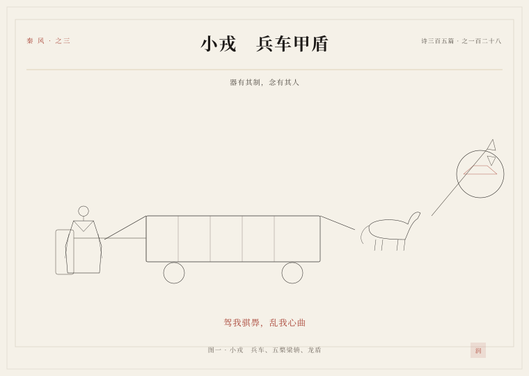
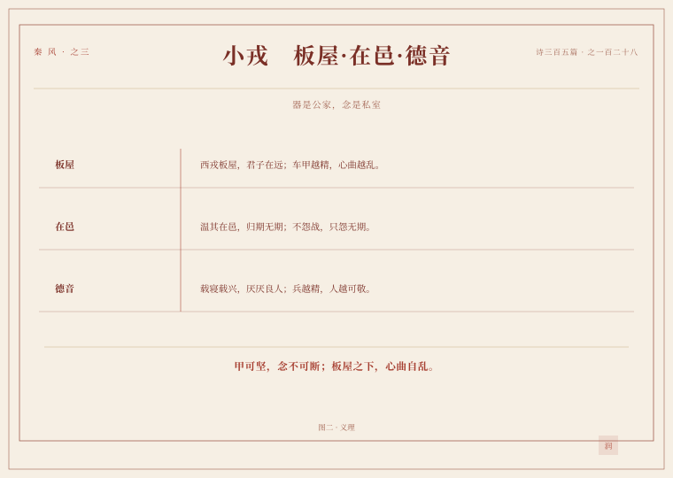

第一百二十八篇 小戎
秦风 · 之三 SJ128
朗读 · 普通话
依经文原文朗读，章次不读出；配古琴底乐，不改速、不加拖腔。全库同一音色（豆包 TTS），非播音员录制。
一 解题
诗三判：
- 谁在说：从军者之妇，亦兼国人之矜。前二章细数车甲，末一章细数兵器；每章末三句归到「念君子」。
- 说什么事：三章由车、马、兵器递进。器物越精，思念越深；写甲兵之盛，正是写征役之久。
- 为何编在此：承《驷驖》。田狩是国之礼，征伐是国之役；由狩入战，秦风由乐转苦。
《毛序》：“《小戎》，美襄公也。备其兵甲以讨西戎。西戎方强，而征伐不休，国人则矜其车甲，妇人能闵其君子焉。”
朱子《诗集传》：“赋也。俴，浅；收，轸也。五，五束；楘，历录也。梁辀，辀上句衡也。一辀五束，束有历录。茵，车褥，以虎皮为之，谓之文茵。畅毂，长毂也。青黑曰骐，左足白曰馵。骝，赤马黑鬣；騧，黄马黑喙。龙盾，画龙于盾，合而载之，以为车蔽。觼，在轼前所以系骖之内辔者，以白金沃之；軜，骖之内辔纳于觼者也。厹，三隅矛也；錞，其鐏也。蒙，杂；伐，盾也，画杂羽于盾，苑然有文。虎韔，以虎皮饰弓室；镂膺，刻金饰马带。闭，檠也；绲，绳；縢，约也。弓则以竹为檠，以绳约之于弓隈，以备损伤。厌厌，安也；秩秩，有序也。”
本库的看法：《小戎》是一首把「甲」写成「念」的诗。
车甲愈坚，妇人愈念；器物写得愈细，板屋之远愈清楚。不写战场，只写车马；不写伤亡，只写寝兴。
断语：甲可坚，念不可断；板屋之下，心曲自乱。
先辨五事：「小戎」是兵车，不是小戎狄；「俴收」是浅轸，不是浅收；「板屋」是西戎屋制，不是木板房泛称；「厌厌」是安静，不是厌烦；「秩秩」是有序，不是秩禄。
二 经文
第一章
小戎俴收，五楘梁辀。
游环胁驱，阴靷鋈续。
文茵畅毂，驾我骐馵。
言念君子，温其如玉。
在其板屋，乱我心曲。
第二章
四牡孔阜，六辔在手。
骐骝是中，騧骊是骖。
龙盾之合，鋈以觼軜。
言念君子，温其在邑。
方何为期，胡然我念之？
第三章
俴驷孔群，厹矛鋈錞。
蒙伐有苑，虎韔镂膺。
交韔二弓，竹闭绲縢。
言念君子，载寝载兴。
厌厌良人，秩秩德音。
分章：三章，章十句。
三 韵读
- 一章：收、辀、驱、续、毂、馵、玉、屋、曲，幽屋合韵。器名密，韵反缓。
- 二章：阜、手幽部；中、骖侵部；合、軜缉部；邑职部；期、之之部。章内多韵部，不强牵通押。
- 三章：群、錞、苑、人文部；膺、縢、音侵部；兴蒸部。文侵蒸旁转通押；兵器收，德音起。
读法：三章皆以器起、以念收；器是公家，念是私室。
四 字义与名物
- 小戎：毛传「兵车也」。俴收：俴，浅；收，轸（车后横木）。五楘：五束皮饰，楘，历录之文。梁辀：辀上句衡，弯辕。
- 游环：靳环，游于服马之背，贯骖之外辔以禁其出。胁驱：以革为首属轭、尾属轸，著服马外胁，以止骖之入。阴靷：阴，掩轨；靷，骖马所引之带。鋈续：白金沃续环。
- 文茵：虎皮车褥。畅毂：长毂。骐馵：青黑文曰骐，左足白曰馵。板屋：毛传「西戎之俗，以板为屋」。
- 骐骝：青黑文、赤身黑鬣为骝，在中服。騧骊：黄马黑喙曰騧，黑马曰骊，在骖。龙盾：画龙之盾，合载为车蔽。觼軜：觼，轼前系骖内辔之器，白金沃之；軜，骖之内辔纳于觼。
- 厹矛：三隅矛。錞：矛柄下端鐏。蒙伐：画杂羽之盾。虎韔：虎皮弓室。镂膺：刻金饰马带。交韔二弓：两弓交置弓室，备折毁。竹闭绲縢：闭，弓檠；绲，绳；縢，约；以竹檠、绳约弓隈，以备损伤。
- 厌厌：毛传「安静也」。秩秩：毛传「有常也」，朱传「有序也」；从有序。
五 今译
小戎兵车浅轸，五束皮饰弯辕。游环胁驱，阴靷白铜续。纹褥长毂，驾着我的青黑马。想念君子，温润如玉。他在板屋，乱我心曲。
四牡甚肥，六辔在手。青黑与骝在中，騧与骊在旁。龙盾合挂，白铜舌环。想念君子，温润在邑。何时是归期？我为什么这样想他？
浅驷甚群，三棱矛白铜錞。蒙盾有纹，虎弓袋镂胸。两弓交袋，竹檠绳缠。想念君子，睡下又起。安静良人，有序德音。
六 章旨
- 一章：写车。收、辀、环、驱、靷、续、茵、毂，八器一路；末三句归「板屋」。车越细，远越真。
- 二章：写马与盾。四牡、六辔、中骖、龙盾，一层一层；末三句归「在邑」。马越齐，期越无期。
- 三章：写兵器。矛、錞、盾、弓袋、弓檠，收束；末三句归「德音」。兵越精，人越可敬。
- 总收：三章皆以器起，以念收；器是公家，念是私室。
七 诗教
- 兴：无兴，直赋器；赋器正是赋思，器一停，思就起。
- 观：观秦之强，不在口号，在车甲之制；一辕一环皆有法，国之力在细处。
- 群：国人与妇人的两重口吻；国人矜车甲，妇人闵君子，一篇而两心。
- 怨：怨在「方何为期」；不怨战，怨无期。
八 分寸与边界
- 不可把「小戎」当西戎。小戎是兵车；一作戎狄，全篇器物无主。
- 不可把「板屋」当普通木屋。它是西戎之俗；一作普通，征役之地就不远。
- 不可把「厌厌」读作厌烦。厌厌是安静；一作厌，良人就成了可厌之人。
- 不可把此诗读作纯武器谱。每章末三句是眼；一去念，三章就成兵器账。
- 不可把「温其如玉」当外貌。它是德性温润；一作肤色，君子就成美人。
九 存疑
- 诗旨：毛序美襄公备兵甲讨西戎，妇人闵其君子；朱子从之。本库从毛朱，兼取国人矜车甲。
- 「板屋」：毛传「西戎之俗，以板为屋」；从西戎板屋。
- 「厌厌」：毛传「安静也」；一说「厌厌」为安闲之貌。从安静。
- 「秩秩」：毛传「有常也」，朱传「有序也」；从有序。
- 「觼軜」异文：一本作「觼軏」；軜为骖内辔，軏为车轭，义别。从毛诗作「軜」。
- 作者口吻：一篇兼国人矜车甲与妇人闵君子两重口吻，是妇人自作还是国人代述，旧无定说。作者存疑。
十 跨典
- 《史记·秦本纪》：襄公备兵甲以讨西戎，伐戎至岐；——毛序「备其兵甲，以讨西戎」之史。车兵器械，皆戎马之备。
- 《诗经·魏风·陟岵》（SJ110）：征人思乡，父母兄弟瞻望；小戎是妇人念征夫，一在外一在内，两诗对读。
- 《孙子·作战》：“车甲之奉，日费千金。”——车甲之重；此诗细数车甲，正见其重。
- 《诗经·秦风·无衣》（SJ133）：同写兵；小戎写器与念，无衣写袍与同。
- 《诗经·秦风·驷驖》（SJ127）：前篇狩，此篇征；一乐一苦，秦风之转。
十一 双卡与图
六对：
| 小戎（兵车） |
小戎（西戎） |
| 俴收（浅轸） |
俴收（浅收） |
| 板屋（西戎俗） |
板屋（木屋） |
| 厌厌（安静） |
厌厌（厌烦） |
| 秩秩（有序） |
秩秩（秩禄） |
| 温如玉（德性） |
温如玉（肤色） |

图一 · 小戎 兵车、五楘梁辀、龙盾

图二 · 小戎 车、马、兵与三念
读图三处：
- 兵车：图一车箱浅轸、弯辕、五束皮饰、游环胁驱，皆以线描；车可辨制，不画整车填面。
- 龙盾：图一盾面画龙一线，盾背合挂；矛三棱、錞在下；兵器只画可认处，不画全甲士。
- 三念：图二「板屋／在邑／德音」三列，末列良人只画衣身，朱线收「秩秩德音」；念一格比一格静。
断语：甲可坚，念不可断；板屋之下，心曲自乱。